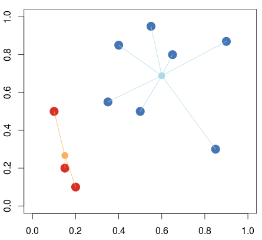

Theory and Algorithm
The main idea of K-means is to define k centroids, one for each cluster, and to iteratively move them given a set of rules. Eventually, they will stop moving, at which point the algorithm has converged. The centroids are initialized randomly, though it is common to initialize them as far apart as possible. The iterative process moves through 2 alternating stages, the expectation or E step, and the maximization or M step.
E Step: At the E step we assign each data point to its nearest centroid, forming a cluster for each centroid, and assigning every point in the set to one cluster.
M Step: At the M step we move the centroids to the mean of their respective clusters.
Notice that after the M step, the distances between the centroids and any points may have changed. We then return to the E step, re-assigning every point to clusters according to the new distances. This process may be looped until convergence, at which point the algorithm may return the final clusters.
Let’s derive our formal algorithm as described above:
Start: Randomly initialize a guess of k centers
Step 1: Assign all points to the the centroid closest to them.

- Find the distances between all points to all all centroids, forming a matrix
- Assign each point n to the index of the closest centroid
Step 2: Update the centroids:

- Take each centroid and move to the average of its assigned data-points.
Step 3: Repeat until the centroids stop moving.

Different colors represent a different assigned cluster, centroids denoted by ‘+’.